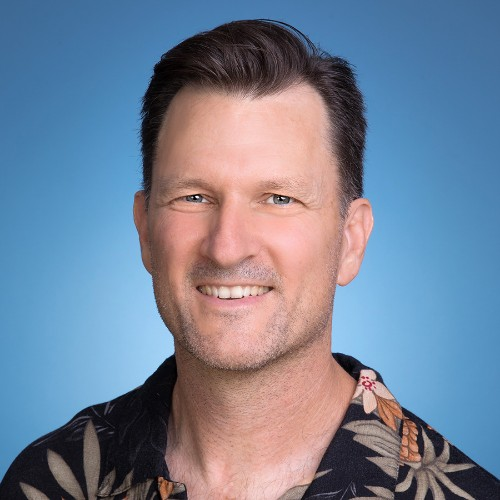

Contact
Rich Bodo is the principal of Oneroa Systems. He's been building digital systems since 1979. He was the director of technical operations at Singularity University, and has built systems for the World Food Programme, Mozilla, Kiva and Sun Microsystems. He's an Edmund Hillary Fellow. In his spare time, he builds tools for healthier personal networks. He lives on Waiheke Island with his wife and daughter.